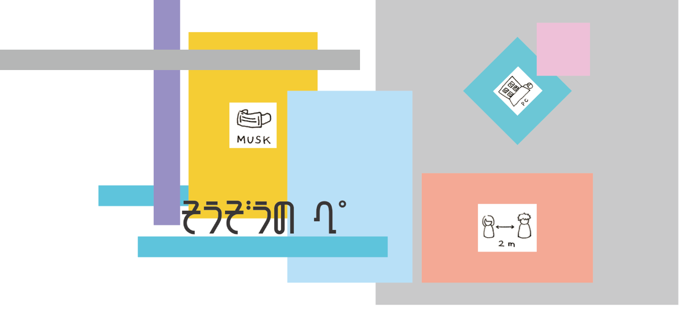

「そうぞうの演劇祭」
この数ヶ月の間、家にいながら、いろいろなことを考えました。
延期となってしまったNo.1 Pure Pedigreeのこと。
日々増え続ける亡くなっていく人々のこと。
ウイルス禍と共に浮かび上がってきた社会の分断のこと。
この間に考えたことは、本来ならば、演劇として作品に昇華し得たはずです。
しかし、このウイルス禍によって、その演劇という手段さえも奪われてしまいました。
そこで、ぺぺぺの会では「そうぞうの演劇祭」を開きました。
いま、演劇ができたとしたら、どういう公演を打っていたのか。
本来ならば上演されたかもしれない演劇の、そのフライヤーという形で、
ぺぺぺの会の一人一人が、
この数ヶ月の間に起きたさまざまな出来事や、演劇のことについて考えました。
有色の美
熊野美幸

しない ために する
佐藤鈴奈
白に白を注す
宮澤大和
触れる
有間絵未
platfprm
石塚晴日

【公演実施のお詫び】
鈴木南音